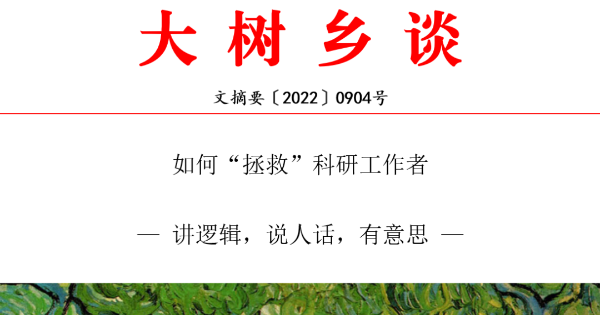
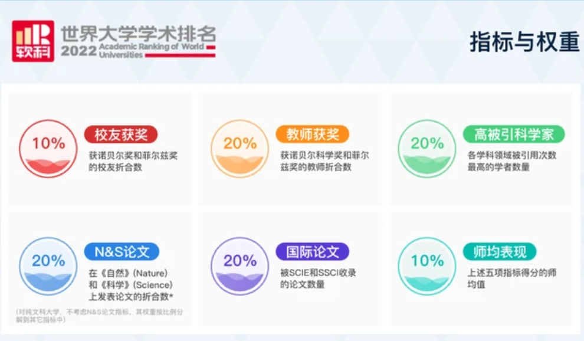

重器轻人，一将功成万骨枯

这周北京举行中国国际服务贸易交易会，去看了下，看到不少新东西。又跟一些朋友交流了下，其中一个话题就是国内科研，尤其青年科研出头难，颇有些感触，比如《不解决底层问题，中国可能永远被“卡脖子”》《“科学家”考公务员、博士当城管，挺好》提到的科研问题，颇为感慨，做个分享。
- 1 -
国内各行业都很卷，但科研界一定是最卷的之一，青年人尤其卷，尤其是这几年博士越来越多，海归的越来越多，而中国经济和产业发展没到那个层次，产业界提供不了足够的高层次就业岗位，于是大量接受博士以上教育的人才，只能被迫在高校圈子里内卷。供严重过于求，自然就有人开始压价，使劲剥削，典型的就是搞出来残酷的“非升即走”。比如中山大学，2015年启动“人才强校”战略，到2021年一口气引进各类人才8000多人，全部具有博士学位。为了安置这些人，中山大学特别设置了“专职科研人员”的岗位，而且这个岗位招聘的时候几乎不淘汰人。
但这8000人注定大多数无法转正，就算不提科研资源的问题，单说研究生名额，一所大学能够招收的研究生是有限的，6年8000多名研究员，远远超过每年研究生招收人数，这就注定了很多年轻的研究员只有研究任务，但没有招生名额。在高校，招生名额和项目经费同样重要，这才是真正的“编制”，因为自从前两年进行改革之后，现在的高校“编制”包括长聘，都是学校自己的“编制”，严格讲离开所在的学校就不认了，本质上跟和企业签订劳动合同没什么区别，学校随时可以解除合同，只不过因为高校的特殊性，仍然比较稳定罢了。
一个研究员没有学生，那就不可能搞起来像样的研究，就只能依附于科研大佬，而在规模效应下，必然导致学术山头变得更高，非圈子里的年轻人更难出头，那些注定被淘汰的大多数人，只能沦为极为廉价的科研劳动力，从工作时间和脑力付出上来看，或许还不如流水线工厂。小镇之前也迷惑为什么会这么搞，这次正好有这方面的朋友帮助解惑，他说了两点：第一：教育部对接的是高校，目前工作重点也是高校的产出，既然对接的是高校，那么高校自然以核心利益为基础制定政策，关键要取得同其他高校的竞争胜利。
第二：在目前的考核模式下，大量招收廉价科研劳动力，这会大大提升高校的综合排名，对于高校自身极为有利。基于这两点，很多事就很明白了。目前国内外主要的大学排行榜，发表论文的数量和质量都是核心，比如中国的软科学术大学排名，特别强调客观性数据，比QS等公关操控型的客观得多。其中60%与论文直接相关，包括20%占比的高被引科学家数量、20%占比的N&S论文、20%占比的国际论文。

在2022年软科排名中，中山大学跃居国内第七，世界第79，仅次于清华、北大、浙大、上交、中科大、复旦，在去年首次进入世界百强基础上，再大幅上升10名。这背后引进的大量青年人才发挥了重要作用，以较低的薪资、少量的转正名额，激励多发论文，毕竟创新的点子是有限的，好期刊审核时间长，时效性跟不上科研领域尤其是CS领域的日新月异，大量引进的青年人才可以直接将博士期间研究课题转化为一篇篇学术论文，大幅提高高校在ESI、Nature Index等方面的论文量，教师学生比数据也更加好看，直接助力提升在各个榜单上的排名。
但是世界上不存在只有利没有弊的事情，这也埋下了一些隐患，而且影响越来越大，毕竟每一名博士背后都有一个师门，也有各自的亲朋好友，大多数投身高校和科研的人，大概率不会离开学术圈，没能转正之后还是会去其他高校，而且不乏在名牌高校获得教职的。现在才刚刚开始，随着这批人在学术界影响力越来越大，以后的学术同行评议会不会发泄下怨气呢？比如申请的基金论文会不会莫名其妙的被毙掉？相关的投票会不会就是投给别人？总不能觉得搞科研就是圣人吧，就连牛顿那都是学术界出了名的“学术流氓”，何况凡人。2021年中科院新增65名院士，涉及30所大学、20个科研单位、3家医院和3家企业研究院，然而中山大学竟然直接挂零，这多少令人意外，毕竟最近20年，中山大学在各类大学排名一直稳居国内前10左右，办学经费也长期排名全国前五，就连同城以工科见长的华南理工大学都有1人新入选。
当然，院士评选是综合性的，新引进人才不过几年，还需要沉淀，但是有没有一些其他影响呢？不能确认，也不好排除。
- 2 -
这几年搞“非升即走”的越来越多，这是对“Tenure-Track(预聘-长聘)”制度的形象比喻，主要是通过对6年来科研的综合考评，决定要不要把助理教授（或者各种其他特设岗位）晋升为副教授。成功就留下获得终身教职，一般没有大错就不会轻易解聘；如果没通过，就得离开另谋出路。很多人把这套制度以为是学自美国，其实并不符合实际，真正的源头是2011年10月开始的人事改革。这个改革起因是随着中国科研投入的增加，国内大规模引进海外人才，大量海归回国，他们的生活待遇、科研经费、科研条件远远高出本土科研人才，确实起到了“鲶鱼效应”，但是也有一些海归研究和教学能力非常一般，同工不同酬大大激化了海归和本土之间的矛盾，也严重影响了本土学者尤其是本土青年学者的积极性。
试点改革中，人民大学推出了“双轨制”改革，对海归人才设立两种岗位：一是人才岗，高收入高风险。实行年薪制，3年一聘，要求必须在聘期内在国际高水平期刊发表3篇学术论文，不合格不续聘。二是普通岗，低收入低风险。工资和本土学者一致，发固定工资，但是没有硬性的国际期刊论文发表要求。这大大缓解了海归和本土人才之间的矛盾，大家拿成果说话，更加公平，而且为了解决有的人钻空子，以人才岗入职拿了高薪再转普通岗，还特别规定考核不合格的人才岗不能在本校转为普通岗，必须离职，也就是“非升即走”。
可见“非升即走”出发点是好的，是为了区分和留住人才，但是很多出发点是好的，在实际演变中就变味了。“非升即走”做的最好的当然是美国，但是美国的体系和中国有着巨大差别。核心区别有三：一是通过率极高。美国大部分高校的“非升即走”通过率在90%以上，即使最严格的哈佛，通过率也接近70%，这与国内极低的通过率截然相反。二是招聘时严格把关。美国学校挑选助理教授的时候，抱着找长期同事的心态，考核很严，而且招聘的人数极为有限，多数美国博士无法在高校任职。
三是入职后获得的资源和权力远优于国内。在美国“非升即走”的助理教授拥有更加充分的科研经费，而且除了行政上的上级，不依附于任何学术权威，更加独立，天然具备博导资格，除了极少数重大事宜和正式教授享有相同的权利，可以参与学院的管理，更加重要的是，转正的标准是确定的，不会因为换了领导或者过了几年标准就变了。这一切制度上的原因在于美国有教授联合会，形成了行业自治，能够代表个体与学校争取权利。而在中国，并没有教授联合会这样的自治组织，每一个“非升即走”的青年学者，都要以个人同整个大学进行博弈，大学的优势极为明显，可以随便更改转正标准，也可以随意调控资源分配。
比如有研究发现，中国高校的学术资源，有近90%集中在前20%的科研人员手中，其他80%科研人员只占有一成多的资源，明显高于美国和日本，而中国学术资源的分配非常关键的就是学术大佬。高校大量招收“非升即走”人员，并且挂在学术大佬名下，多个青年学者的成果堆到一个大佬名下，也可以帮助大佬冲击更高的头衔，拿到更高级的帽子，直至冲击最顶级的院士，就可以帮助学校争取更多的资源，尤其是直接影响国家科研资源的分配。正是因为资源集中度高，必然导致在中国推行“非升即走”，只能变成恶性竞争，通过压榨青年科研人才来获得收益。
但这仅仅是表露出来的现象，关键是更深层的原因，比如为什么“生化环材”会被称为“四大天坑”？ 关键就在于，“生化环材”很难找到合适的产业界就业机会，要么干脆转行，要么只能竞争极为有限的高校职位，那必然卷到无以复加。而在美国或者日本，生化环材完全不是天坑专业，工业界有足够的意愿和待遇来消化博士生，高校岗位虽然抢手，比如美国高校每年只招收极少人，但是去不了高校可以去工业界，在工业界照样可以搞出诺贝尔奖级别的成果，没啥可慌张的。
但是国内呢？在全球价值链中的地位整体还处于中下层，工业界虽然有一些专精特新的小巨头，但是整体水平仍然比较基础，而且生化环材都是“重器械轻人才”的行业，没有巨量的资金和设备投入根本玩不转。于是大量的“天坑”专业毕业生只能被市场赶回学校，在供严重大于求的矛盾中，就业市场极度恶化，自然就有了“非升即走”的异化，根本不是什么学习美国经验。
- 3 -
在交流中，看到几位青年学者朋友大倒苦水，小镇也提出，是否可以学习下美国的经验，严控每年聘用规模，从现在一个学校动辄招收几百人上千人，降到几十人，反正多数人也并不适合搞科研，还不如优中选优，其他人也能早早去其他行业，免得浪费几年的宝贵时光。但这也遭到了他们的反对，原因很简单还是人太多了，能够让博士发挥能力的岗位太少了，在这种情况下如果大幅提高准入门槛，提高人均占有的资源，那必将导致大量的人来进入学术圈搏一把的机会都没有，读了博士竟然找不到工作，那就太荒唐了。
“非升即走”虽然难，很多人拿到的薪资也不过相当于所在城市的平均薪资，甚至还有所不如，但是为什么不走呢？不就是因为在其他地方很难找到更好的工作，不得不进来卷一卷，多少还有个指望。更何况，“非升即走”的高校终究还是少数，主要集中在沿海发达城市的重点高校，而中国的高等教育院校还有很多，在名校卷一卷，有一些成果之后，就算没能转正，也可以去非沿海地区的二三线城市的省属、市属院校，还是有出路的，只不过不太甘心罢了，毕竟能读到博士，还能进入名校卷一卷“非升即走”，还是有理想的。
交流中，还谈到现在以论文和期刊引用等指标进行评价的事。美国在人才招聘上，并不是完全依据论文，而是从自身学科建设角度入手进行同行评审，比如今年决定招某个方向的人，通过评审选择这个方向适合的人，并不太在意发表过什么论文。而在国内更重视发表过什么论文，这就导致少数特别容易发高等级论文的领域，挤占了大量冷门领域的机会，让各个高校更加同质化，也导致在一些领域人才和资源分配严重不足。但是客观地讲，无论是以论文论胜负，还是同行评审，并不意味着哪个必然更优。
中国几十年前也才采取过推荐和评审机制，但结果大大助长拉帮结派、学阀一手遮天。说白了穷国盲目搞富制度是不行的，中国学术发展远远不足，还没有资格从顶层设计上，从研究工作本身评价人才，资源分配等体制机制问题也没有调整好，实践证明搞评审行不通，虽然通过论文进行评价的路子也有很大弊端，比如典型的某大学通过大量发论文、交叉引用，竟然把数学排名刷成了中国第一。实践证明照搬美国和欧洲的那套绝对行不通，也只能摸着石头过河了。但是在这个过程中，大量青年人才大概率成为“被牺牲者”，按照29岁博士毕业的一般水平，“3+3”后35岁，如果拿不到最低“青基”的帽子，学术生涯大概到此结束了，被淘汰之后，虽然说可以去二三线城市找找机会，但是家人能这么容易换城市吗？
10年学术拼命努力，身体不行了，中年危机，又有孩子嗷嗷待哺，想要换行，却发现很难就业。养蛊式的高淘汰率成就了高校和团队，也成就了中国科研崛起的奇迹，但是这背后消耗的是庞大的青年科研从业人员的青春和科研热情。小镇分享了很多与个人发展有关的文章，总有人留言说，小镇不应该太功利，如果一个个人都去考虑自己，就想着多赚钱，那国家怎么办，还有的建议小镇应该更多鼓励人去投身科研。但小镇知道科研界的现状，说的直白点，非升即走的大量青年科研学者核心任务就是发论文，这跟企业招员工本质也没太多区别，很多企业根本不管员工的职业发展，不断地下任务。
但是科研毕竟不同于普通工作，谁都知道需要选择合适的人，给他足够的资源和时间，等待他做出真正的科研成果，但是现状如何呢？还是小镇常说的那句话：不要盲目择业，一定要想清楚，先照顾好自己，只要踏实工作、依法纳税、履行法定责任，就已经是对国家的贡献了。 但小镇仍然希望，我们最终能够走出一条属于中国的发展模式，人尽其用，但这需要全体中国人的努力，中国在全人类世界中的地位，直接关系到我们每一个人。
其他文章推荐
■ 经济如此困难，中国会重新刺激房地产吗？
如果喜欢，还请点赞、“在看”和关注吧 欢迎分享，让更多人发现“大树乡谈”